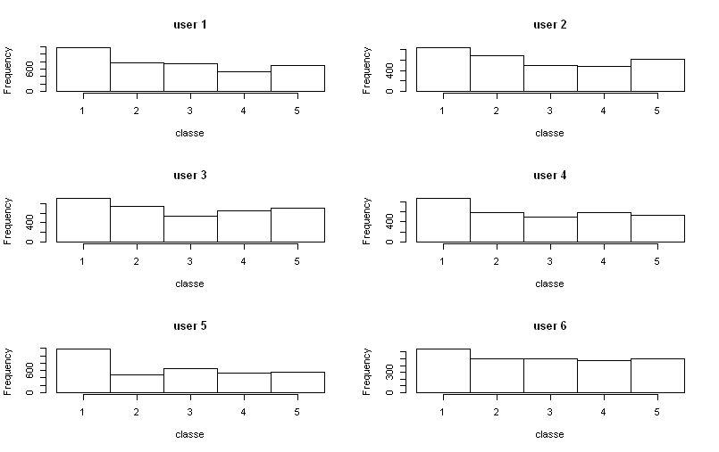

Using wearable devices it is now possible to collect data about personal activity. One thing that people regularly do is quantify how much of a particular activity they do, but they rarely quantify how well they do it. In this project, our goal is to use data from accelerometers on the belt, forearm, arm, and dumbell of 6 participants. They were asked to perform barbell lifts correctly and incorrectly in 5 different ways. More information is available from the website here: http://groupware.les.inf.puc-rio.br/har (see the section on the Weight Lifting Exercise Dataset).
The training data for this project are available here: https://d396qusza40orc.cloudfront.net/predmachlearn/pml-training.csv
The test data are available here: https://d396qusza40orc.cloudfront.net/predmachlearn/pml-testing.csv
The data for this project come from this source: http://groupware.les.inf.puc-rio.br/har.
The goal of this project is to predict the manner in which people exercise. This is the “classe” variable in the training set. We may use any of the variables in prediction. We will create a report describing how we built the model, how we used cross validation, what is the out of sample error, and why we made some choices. We will also use our model to predict 20 different test cases.
require(caret)
require(AppliedPredictiveModeling)
require(rpart)
require(randomForest)
require(e1071)
require(ggplot2)
require(grid)
rawTraining <- read.csv("pml-training.csv",na.strings = c("NA", ""))
dim(rawTraining)
## [1] 19622 160
The training data set has 160 columns, some of which have mostly empty or NA entries. We select only variables with a valid first observation, which reduces the number of columns to 60. We check that there are no more NA entires.
tidyTraining <- rawTraining[,!is.na(rawTraining[1,])]
dim(tidyTraining)
## [1] 19622 60
sum(is.na(tidyTraining[,])); sum(complete.cases(tidyTraining))
## [1] 0
## [1] 19622
Eliminate columns: row id, time stamps, new_window, num_window
subTidyTraining <- tidyTraining[,c(-1,-3,-4,-5,-6,-7)]
Investigate if there is an obvious correlation between user_name and classe.
subTidyTraining$user_name <- as.integer(subTidyTraining$user_name)
attach(mtcars)
par(mfrow=c(3,2))
hist(as.integer(subTidyTraining[subTidyTraining$user_name==1,]$classe),main="user 1",xlab="classe",breaks=seq(0.5,5.5,l=6))
hist(as.integer(subTidyTraining[subTidyTraining$user_name==2,]$classe),main="user 2",xlab="classe",breaks=seq(0.5,5.5,l=6))
hist(as.integer(subTidyTraining[subTidyTraining$user_name==3,]$classe),main="user 3",xlab="classe",breaks=seq(0.5,5.5,l=6))
hist(as.integer(subTidyTraining[subTidyTraining$user_name==4,]$classe),main="user 4",xlab="classe",breaks=seq(0.5,5.5,l=6))
hist(as.integer(subTidyTraining[subTidyTraining$user_name==5,]$classe),main="user 5",xlab="classe",breaks=seq(0.5,5.5,l=6))
hist(as.integer(subTidyTraining[subTidyTraining$user_name==6,]$classe),main="user 6",xlab="classe",breaks=seq(0.5,5.5,l=6))
par(mfrow=c(1,1))

Remove the user_name variable since (i) the prediction should work for other people and (ii) there is no strong correlation with classe. Check that “classe” is now in column 53.
subTidyTraining <- subTidyTraining[,-1]
names(subTidyTraining[53])
##[1] "classe"
Check that there are no near zero variables. Other types of preprocessing have been tested by we skip them for the sake of clarity in the final interpretation.
sum(nearZeroVar(subTidyTraining,saveMetrics = TRUE)$nzv)
## [1] 0
Split training data into myTraining and myValidation subsets to estimate out-of-sample error.
inTrain <- createDataPartition(subTidyTraining$classe, p=0.6, list=FALSE)
myTraining <- subTidyTraining[inTrain,]
myValidation <- subTidyTraining[-inTrain,]
dim(myTraining); dim(myValidation)
## [1] 11776 53
## [1] 7846 53
Predicting with trees
set.seed(3433)
modFitRpart <- rpart(classe ~ ., data=myTraining, method="class")
print(modFitRpart$finalModel)
predRpart <- predict(modFitRpart,newdata = myValidation, type = "class")
confusionMatrix(myValidation$classe,predRpart)
## Confusion Matrix and Statistics
##
## Reference
## Prediction A B C D E
## A 1988 53 70 84 37
## B 302 855 198 112 51
## C 22 165 1077 92 12
## D 120 66 188 855 57
## E 65 131 188 137 921
##
## Overall Statistics
##
## Accuracy : 0.726
## 95% CI : (0.716, 0.7358)
## No Information Rate : 0.3183
## P-Value [Acc > NIR] : < 2.2e-16
##
## Kappa : 0.6522
## Mcnemar's Test P-Value : < 2.2e-16
##
## Statistics by Class:
##
## Class: A Class: B Class: C Class: D Class: E
## Sensitivity 0.7962 0.6732 0.6258 0.6680 0.8544
## Specificity 0.9544 0.8992 0.9525 0.9344 0.9230
## Pos Pred Value 0.8907 0.5632 0.7873 0.6649 0.6387
## Neg Pred Value 0.9093 0.9344 0.9006 0.9352 0.9755
## Prevalence 0.3183 0.1619 0.2193 0.1631 0.1374
## Detection Rate 0.2534 0.1090 0.1373 0.1090 0.1174
## Detection Prevalence 0.2845 0.1935 0.1744 0.1639 0.1838
## Balanced Accuracy 0.8753 0.7862 0.7891 0.8012 0.8887
Predicting with support vector machines
set.seed(3435)
modFitSVM <- svm(classe~.,data=myTraining)
print(modFitSVM)
predSVM <- predict(modFitSVM,newdata = myValidation)
confusionMatrix(myValidation$classe,predSVM)
## Confusion Matrix and Statistics
##
## Reference
## Prediction A B C D E
## A 2225 1 5 0 1
## B 125 1365 28 0 0
## C 1 36 1317 13 1
## D 5 0 112 1166 3
## E 0 8 31 48 1355
##
## Overall Statistics
##
## Accuracy : 0.9467
## 95% CI : (0.9415, 0.9516)
## No Information Rate : 0.3003
## P-Value [Acc > NIR] : < 2.2e-16
##
## Kappa : 0.9325
## Mcnemar's Test P-Value : NA
##
## Statistics by Class:
##
## Class: A Class: B Class: C Class: D Class: E
## Sensitivity 0.9444 0.9681 0.8821 0.9503 0.9963
## Specificity 0.9987 0.9762 0.9920 0.9819 0.9866
## Pos Pred Value 0.9969 0.8992 0.9627 0.9067 0.9397
## Neg Pred Value 0.9767 0.9929 0.9728 0.9907 0.9992
## Prevalence 0.3003 0.1797 0.1903 0.1564 0.1733
## Detection Rate 0.2836 0.1740 0.1679 0.1486 0.1727
## Detection Prevalence 0.2845 0.1935 0.1744 0.1639 0.1838
## Balanced Accuracy 0.9716 0.9722 0.9370 0.9661 0.9915
Predicting with random forest
set.seed(3434)
# the caret version does not work well
modFitRF <- randomForest(classe~.,data=myTraining,ntree=400,importance=TRUE)
predRF <- predict(modFitRF,newdata = myValidation)
confusionMatrix(myValidation$classe,predRF)
## Confusion Matrix and Statistics
##
## Reference
## Prediction A B C D E
## A 2230 1 1 0 0
## B 13 1504 1 0 0
## C 0 6 1361 1 0
## D 0 0 17 1267 2
## E 0 0 2 7 1433
##
## Overall Statistics
##
## Accuracy : 0.9935
## 95% CI : (0.9915, 0.9952)
## No Information Rate : 0.2859
## P-Value [Acc > NIR] : < 2.2e-16
##
## Kappa : 0.9918
## Mcnemar's Test P-Value : NA
##
## Statistics by Class:
##
## Class: A Class: B Class: C Class: D Class: E
## Sensitivity 0.9942 0.9954 0.9848 0.9937 0.9986
## Specificity 0.9996 0.9978 0.9989 0.9971 0.9986
## Pos Pred Value 0.9991 0.9908 0.9949 0.9852 0.9938
## Neg Pred Value 0.9977 0.9989 0.9968 0.9988 0.9997
## Prevalence 0.2859 0.1926 0.1761 0.1625 0.1829
## Detection Rate 0.2842 0.1917 0.1735 0.1615 0.1826
## Detection Prevalence 0.2845 0.1935 0.1744 0.1639 0.1838
## Balanced Accuracy 0.9969 0.9966 0.9919 0.9954 0.9986
The accuracy is 73%, for the tree prediction, 93% for SVM, and 99% for random forest. RF is the winner and there is no point in increasing the number of trees, as shown in the pictures. We will focus on RF for in the variable analysis.
The out of sample error for RF is 1-0.9935=0.0065, or 0.65%.
plot(modFitRF,main="No singificant improvement in RF fit for >200 trees")
Using the “importance” matrix from the RF prediciton in the analysis
importanceDF <- data.frame(importance(modFitRF)[,c(6,7)])
importanceDF <- cbind(rownames(importanceDF),importanceDF)
colnames(importanceDF)=c("Variable","MeanDecreaseAccuracy","MeanDecreaseGini")
Order by accuracy and create a plot to identify “heavy hitters”
importanceDFaccuSort <- transform(importanceDF, Variable = reorder(Variable, MeanDecreaseAccuracy))
accuracyPlot<-ggplot(data=importanceDFaccuSort, aes(x=Variable, y=MeanDecreaseAccuracy)) +
ylab("Mean Decrease Accuracy")+xlab("")+geom_bar(stat="identity",width=.7)+coord_flip()
grid.draw(accuracyPlot)
Order by Giniand create a plot to identify “heavy hitters”
importanceDFginiSort <- transform(importanceDF, Variable = reorder(Variable, MeanDecreaseGini))
giniPlot=ggplot(data=importanceDFginiSort, aes(x=Variable, y=MeanDecreaseGini)) +
ylab("Mean Decrease Gini")+xlab("")+geom_bar(stat="identity",width=.7)+ coord_flip()
grid.draw(giniPlot)
rawTesting <- read.csv("pml-testing.csv",na.strings = c("NA", ""))
Use the same subset of columns as in the training dataset (except the “classe” variable)
colSelect <- colnames(subTidyTraining[,-53])
subTidyTesting <- rawTesting[colSelect]
predict using Random Forest
predRFtesting <- predict(modFitRF,newdata = subTidyTesting)
predRFtesting
## 1 2 3 4 5 6 7 8 9 10 11 12 13 14 15 16 17 18 19 20
## B A B A A E D B A A B C B A E E A B B B
## Levels: A B C D E